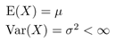

Nopat ja kolikot
Jos heittää noppaa kymmenen kertaa, on hyvin harvinaista saada pelkkiä ykkösiä. Yleensä tuloksena on suunnilleen kaikkia numeroita ykkösen ja kuutosen väliltä. Joskus toki voi saada vaikka viisi kuutostakin, mutta ei kovin usein.
Jos näiden kymmenen heiton tulokset laskee yhteen, on summa luultavasti lähempänä kolmea- neljääkymmentä kuin suurinta mahdollista, kuuttakymmentä eli kymmentä peräkkäistä kuutosta tai toisaalta pienintä mahdollista tulosta, kymmentä, joka tarkoittaisi pelkkiä ykkösiä.
Tämä johtuu siitä, että keskimmäisten summia voi saada huomattavasti useammalla tavalla kuin äärimmäisiä. Esim. kahta noppaa heitettäessä: 1+6 = 2+5 = 3+4 = 7, mutta vain 1+1 = 2 ja vain 6+6 = 12.
Vaikka yhden nopan heitto siis tuottaa yhtä todennäköisesti minkä tahansa silmäluvun, monen nopan summassa pienimmät ja suurimmat tulokset ovat harvinaisempia kuin keskimmäiset. Kokeile itse:
heitä yhtä noppaa 900 kertaa | heitä kahta noppaa 900 kertaa | heitä kymmentä noppaa 900 kertaa
Samalla tavalla käy lanttin heitossakin. Jos heitetään lattialle kourallinen kolikoita, on hyvin harvinaista, että kaikki jäävät esim. kruunapuoli ylöspäin. Joskus niin voi käydä, mutta yleensä molempia maita on suunnilleen sama määrä. Jos sovitaan, että kruuna=0 ja klaava=1, voidaan koetta simuloida koneella:
heitä yhtä kolikkoa 500 kertaa | heitä kolmea kolikkoa 500 kertaa | heitä kourallista (43) kolikoita 2000 kertaa | heitä kuutta kolikkoa 10000 kertaa
Kellokäyrä
Pienet erot keskiarvosta suuntaan tai toiseen ovat tietysti yleisempiä kuin suuret. Niinpä, kuten varmaan huomasit jos kokeilit ylempänä olevia simulaatioita, eri summien todennäköisyydet noudattelevat suunnilleen gaussin käyrää eli normaalijakaumaa, jonka keskipiste on pienimmän ja suurimman mahdollisen summan puolivälissä. Tätä puoliväliä sanotaan odotusarvoksi.
Odotusarvo (eli normaalijakauman keskipiste) on minimi- ja maksimiarvon keskellä vain jos kaikki alkeistapaukset ovat yhtä todennäköisiä, kuten nopan ja lantin heitossa (joissa kaikkien tapausten todennäköisyys on 1/6 tai 1/2). Esim. tikan heitossa suomalaiselle tikkataululle on helpompi saada ykkönen kuin napakymppi. Vaikka kaikki tapaukset eivät olisikaan yhtä todennäköisiä, ovat äärimmäiset summat silti keskimääräisiä harvinaisempia. Monen heiton tulosten summa tuottaa siksi edelleen normaalijakauman:
Heitä yhtä tikkaa 3000 kertaa | Heitä kolmea tikkaa 3000 kertaa | Heitä 20 tikkaa 500 kertaa
Alkeistapausten todennäköisyysjakauma voi siis aivan yhtä hyvin olla symmetrinen tai painottunut; monen summan tulos muistuttaa joka tapauksessa normaalijakaumaa, ainoastaan sen keskipiste (odotusarvo) ja "jyrkkyys" (varianssi) vaihtelevat.
Mielivaltaiset jakaumat
Itse asiassa, jos tuloksia lasketaan yhteen tarpeeksi monta, todennäköisyysjakaumalla ei ole mitään väliä kunhan eri tuloksien määrä on rajallinen ja edes joskus tulee muitakin kuin yhtä ja sama lukua. Esimerkkejä:
Sinikäyräjakauma on kaukana symmetrisestä:
Yksi
sinikäyrä 10000 kertaa |
Kaksi
sinikäyrää 10000 kertaa |
Viisi
sinikäyrää 10000 kertaa
Tangenttijakauma ei myöskään ole erityisen symmetrinen ja lisäksi se on epäjatkuva:
Yksi
tangentti 10000 kertaa |
Kolme
tangenttia 10000 kertaa |
12
tangenttia 10000 kertaa
Pisteenä i:n päällä:
täysin
satunnainen jakauma |
viiden
täysin satunnaisen jakauman summa 30000 kertaa
Koska useimmat luonnolliset ilmiöt (kuten esim. ihmisen pituus) riippuvat useammasta kuin yhdestä tekijästä (ihmisen pituuden tapauksessa: ravinto, useampi geeni, ympäristötekijät, henkilöhistoria, ...), edellä käsitellyistä seuraa erittäin tärkeä johtopäätös: lähes kaikki reaalimaailman "satunnais"-muuttujat noudattavat jonkinlaista normaalijakaumaa.
Formaalisti esitettynä keskeinen raja-arvolause näyttää tältä:
 ,
,
kun X1, X2,... ovat riippumattomia
havaintoja
satunnaismuuttujasta X, jolle pätee:

 Teksti on Public Domain.
Demon lähdekoodi (Rust + Wasm + Javascript): Github.
Teksti on Public Domain.
Demon lähdekoodi (Rust + Wasm + Javascript): Github.